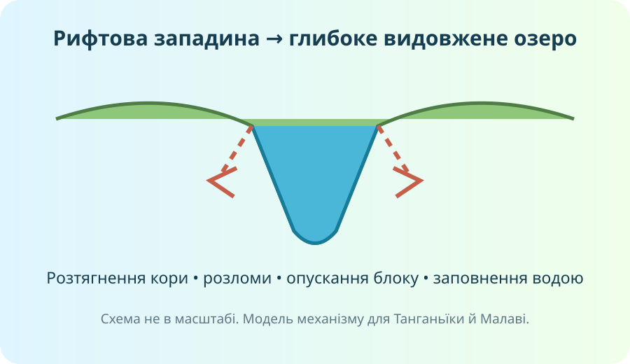

1. Читайте карту як систему доказів
OpenStreetMap. Відкрийте повну карту, збільшуйте басейни Нілу, Конго, Нігеру, Замбезі й район Великих Африканських озер.
Знайдіть дві території, де поверхневих вод багато, і дві, де їх мало. Не називайте лише об’єкти: поясніть розподіл через клімат, рельєф і стік.
Оберіть одну велику річку. За картою визначте, через скільки природно різних територій вона проходить. Чому річка може бути повноводною навіть там, де локально опадів мало?
2. Порівняйте річки не «на око»
Натискайте річки. Шкала показує середній річний стік за даними FAO; це не «ширина річки на фотографії» і не довжина.
3. Чому найбільші й найглибші озера зосереджені на сході?

Локальна навчальна схема. Не масштабна карта.

.jpg?width=1000)

4. Д. Лівінгстон: джерело, а не легенда
Працюйте не з формулою «відкрив Африку», а з конкретними маршрутами й записами. Лівінгстон досліджував верхню течію Замбезі, 1855 року описав Мосі-оа-Тунья для європейської аудиторії, пізніше працював у районі озера Ньяса/Малаві та Танганьїки. Сучасні музеї й географічні товариства також наголошують на ролі африканських провідників і посередників.
Чим відрізняються твердження «Лівінгстон відкрив водоспад» і «Лівінгстон став одним із перших європейців, хто його описав і популяризував у Європі»? Яке точніше й чому?
5. Коротке відеоспостереження: Замбезі з Sentinel‑2
ESA • Earth from Space: Victoria Falls • 2:43
6. Тепер — теорія, яку ви щойно вивели
Річки
Ніл перетинає посушливі області, але живиться з вологіших частин великого басейну. Конго має величезний, дуже вологий екваторіальний басейн і найбільший стік серед річок Африки. Нігер формує велику дугу в Західній Африці. Замбезі стікає до Індійського океану й утворює водоспад Вікторія.
Озера
Вікторія переважно займає відносно неглибоку тектонічну улоговину між гілками рифту. Танганьїка й Малаві — глибокі рифтові озера. Чад — мілке безстічне озеро, площа якого сильно змінюється.
Водозабезпечення
Води розподілені вкрай нерівномірно. Вологі екваторіальні басейни контрастують із Сахарою та іншими аридними зонами. Частина великих басейнів міжнародні, тому вода є не лише природним, а й управлінським ресурсом.
FAO наводить середній річний стік: Конго ≈1460 км³/рік, Нігер ≈320, Ніл ≈202; для Замбезі FAO описує басейн площею близько 1,35 млн км². UNEP зазначає високу частку транскордонних басейнів у поверхневих водних ресурсах Африки.
7. CER: дайте відповідь на головне питання
Твердження: «Африка бідна на воду» — некоректне узагальнення.
8. Домашнє дослідження
§23 у підручнику. Оберіть одну пару: Ніл—Конго, Нігер—Замбезі або Танганьїка—Вікторія. Створіть порівняння з 4 критеріями: положення, живлення/походження, режим або глибина, роль для людей. Кожен висновок підтвердьте картою чи надійним джерелом.
Електронний/видавничий ресурс підручника Гільберг Т., Довгань А., Совенко В. ↗ · FAO AQUASTAT ↗